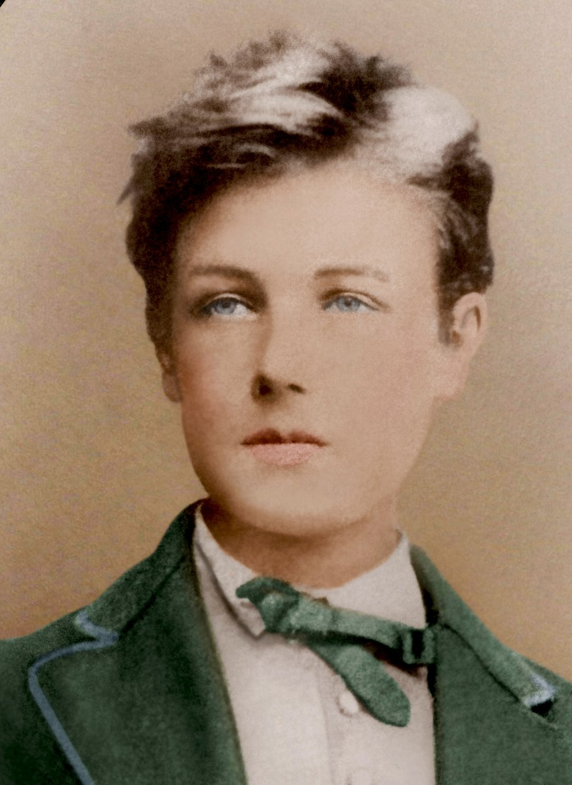

Première générale · Parcours associé
Les Cahiers de Douai
Arthur Rimbaud · « Émancipations créatrices »

Problématique
En quoi peut-on dire que Rimbaud, dans Les Cahiers de Douai, montre toute la puissance libératrice de l'écriture ?
Auteur
Arthur Rimbaud
1854-1891
Œuvre
Les Cahiers de Douai
1870
Parcours
Émancipations créatrices
Progression de la séquence
Introduction
Emancipation artistique
Emancipation politique
Emancipation sentimentale
Evaluation finale
Analyses linéaires
Vénus Anadyomène
Une poésie qui rompt avec la tradition
Problématique : Comment Rimbaud détourne-t-il le mythe de Vénus pour créer un portrait grotesque et provocateur ?
Mouvements :
I. La parodie d'un mythe fondateur (v. 1-4)
II. Une description profondément répugnante (v. 5-11)
III. Le comble de la provocation (v. 12-14)
Corrigé :
« Je m'en allais, les poings dans mes poches crevées »
« Le Forgeron »
Faire du peuple révolté un objet de poésie
Problématique : Comment Rimbaud utilise-t-il le contraste entre beauté et violence pour dénoncer la guerre ?
Mouvements :
I. Un tableau naturel harmonieux
II. La révélation progressive du drame
III. Une dénonciation silencieuse de la guerre
« Ma Bohème (Fantaisie) »
Un poète vagabond
Problématique : Comment Rimbaud fait-il de la nature un espace d'émancipation intérieure ?
"Zone", Apollinaire
Une poésie de la modernité
Problématique : Comment Rimbaud fait-il de la nature un espace d'émancipation intérieure ?
Séances
Rentrée(er) en poésie
Qu'est-ce qu'un sonnet, et que veut dire « respecter » ou « trahir » une forme fixe ?
Objectifs : Découvrir le contexte de création des Cahiers de Douai et comprendre la volonté d'émancipation du jeune Rimbaud.
Documents :
- "Heureux qui comme Ulysse", Les Regrets, Joachim du Bellay
- Fiche outil : les outils poétiques
- Chronologie 1854-1870
Trace écrite :
Fiche outil complétée.
Travail à faire :
Commencer les recherches pour le RCC.
Rimbaud, poète de la tradition ?
Rimbaud est-il un poète respectueux des codes poétiques traditionnels ?
Objectifs : Comparer deux poèmes du recueil ; définir le rapport de Rimbaud aux codes de la poésie.
Textes étudiés :
« Rage de Césars »
« Le Buffet »
Activité :
Créer une carte mentale des images associées
à la liberté dans les poèmes.
Une poésie engagée
Dénoncer le monde contemporain
Objectifs : Comprendre comment Rimbaud utilise la poésie pour critiquer la guerre et les injustices sociales.
Textes :
« Le Dormeur du val »
« Les Effarés »
RCC · Répertoire de citations communes
RCC · 01
La liberté créatrice
Citations montrant comment Rimbaud s'affranchit des modèles poétiques traditionnels.
RCC · 02
Le voyage et l'émancipation
Le déplacement comme symbole d'une libération personnelle et artistique.
RCC · 03
La nature comme refuge
Images naturelles associées à la sensation, au bonheur et à la liberté.
RCC · 04
La dénonciation sociale
Citations révélant le regard critique de Rimbaud sur son époque.
Ressources
Télécharger le PDF
Lire les Cahiers de Douai
Fiche méthode
Sujet et corrigé